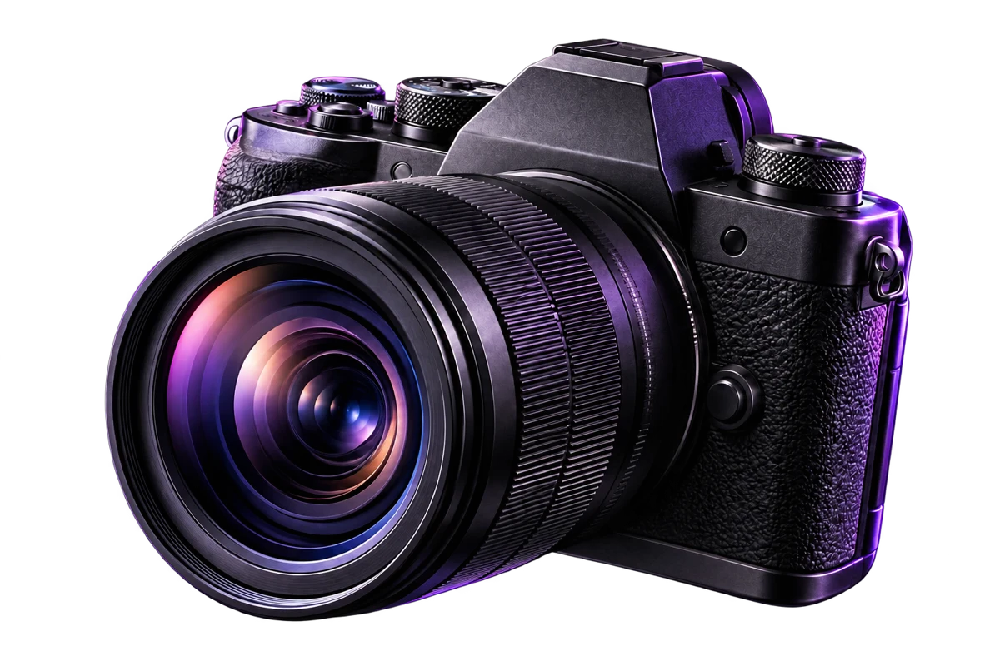

ANDRÉS MONTESINO / FOTÓGRAFOUNA MIRADA PROPIA — 01
OTRA FORMA
DE MIRAR.

La luz. El detalle. Ese instante.
Imágenes que dicen algo de ti.
UNA VISIÓN PROPIA
Cada imagen
debe tener una intención.
Andrés Montesino es fotógrafo especializado en crear imágenes con una identidad visual cuidada, combinando estética editorial, luz y composición para dar carácter a cada proyecto.
Su trabajo explora el retrato, el lifestyle y la fotografía comercial desde una perspectiva personal y contemporánea.
Descubre su forma de trabajar ↗LUZ, COMPOSICIÓN Y CARÁCTER
Una manera de interpretar.
TU PRÓXIMO PROYECTO